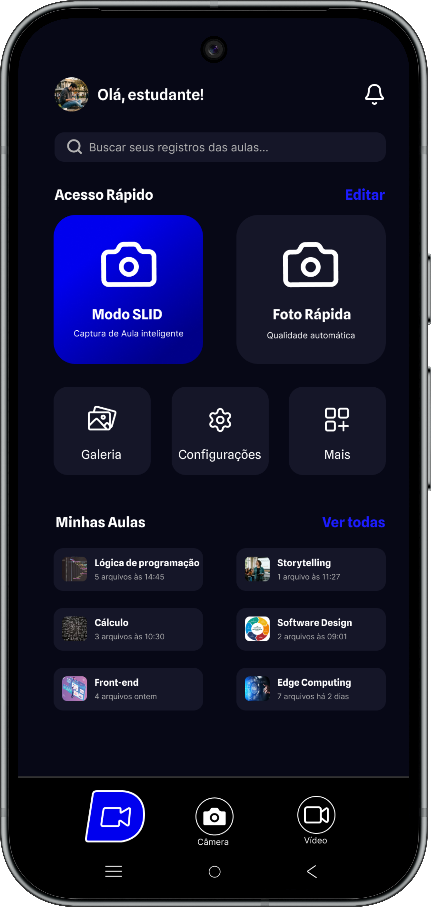

See.
Vê o que importa.
Identifica quadros, slides e textos relevantes durante a aula, ajudando o estudante a focar no conteúdo certo.
 Fale com a gente
Fale com a gente
Capture, organize e revise conteúdos de estudo
direto pela câmera da JOVI.
Identifica quadros, slides e textos relevantes durante a aula, ajudando o estudante a focar no conteúdo certo.
Acompanha o áudio e o momento da explicação para conectar cada registro ao que estava sendo ensinado.
Transforma capturas em material de estudo organizado, facilitando busca, revisão e continuidade depois da aula.
O SliD Mode foi pensado para reduzir o esforço do aluno na hora de registrar a aula. Em vez de apenas tirar fotos, ele entende o conteúdo, interpreta o contexto e entrega uma base pronta para revisar.
Veja como o SliD Mode transforma
o conteúdo da sua aula em
conhecimento organizado.
Captura apenas o que realmente importa na aula.
Seus registros sempre no lugar certo.
Resumos e buscas criados para você.

O SliD Mode transforma a forma como você captura, organiza
e revisa o que realmente importa.